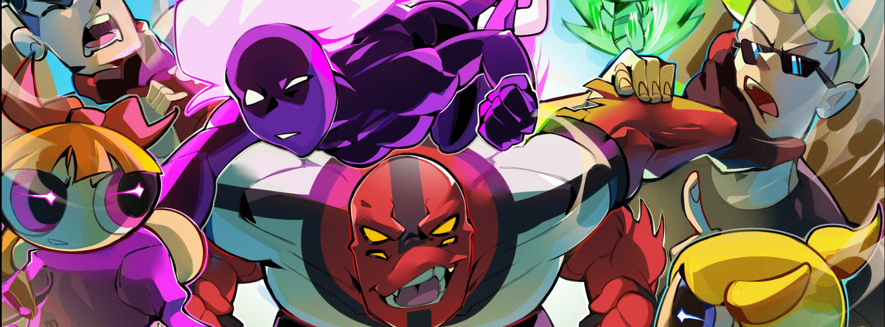
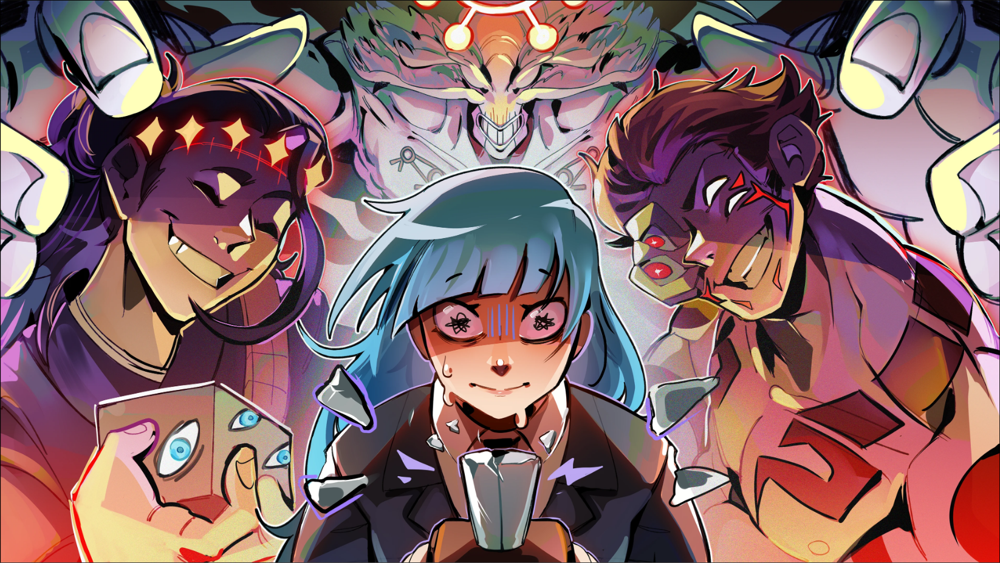

Descubra as animações mais amadas pela comunidade.
Explore recomendações exclusivas, conheça personagens inesquecíveis e mergulhe em histórias que marcaram gerações. Um catálogo criado para verdadeiros fãs de animação!
Avatar a Lenda de Aang
Explore o universo de uma das melhores animações ja criadas, avatar é uma das series mais marcantes da geração milennial.

Os Jovens Titãs
Acompanhe as aventuras de um grupo de adolescentes superpoderosos que unem forças para combater o crime, proteger o mundo e provar que a verdadeira força está na amizade e no trabalho em equipe.

Jujutsu Kaisen
Descubra Jujutsu Kaisen, o fenômeno que conquistou a Geração Z e se consolidou como um dos animes mais populares da atualidade.
+ Como funciona o ranking semanal?
O ranking é atualizado toda segunda-feira cruzando as avaliações da nossa comunidade e engajamento.
+ Como os favoritos são escolhidos?
Os favoritos são definidos baseados puramente no número de usuários que adicionam uma animação em suas listas.
+ Posso filtrar por gênero específico?
Sim! Você pode usar a nossa ferramenta de busca avançada para filtrar obras por gêneros como Ação e Shonen.